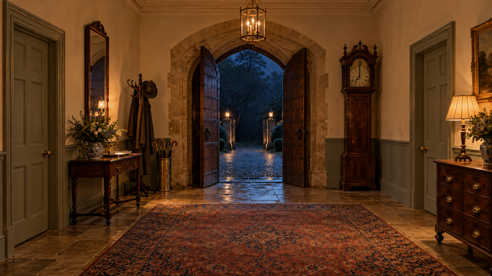hall_hall_mid-v3T-034-门厅 · 1672 × 941 · PNG已修正钟面为七点；门厅无窗、无楼梯。正门四心拱曲线与侧门面板分格仍需按 v1 / 四面板规范建模。打开原图
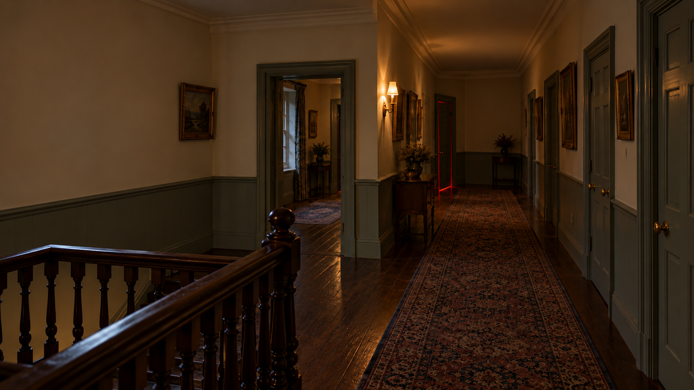hall_landing_darkroom-v3T-034-门厅 · 1672 × 941 · PNG已把暗房红光门从正前方端墙移到远端左墙；中段左侧留过道。精确长度与门洞宽度以 v1 为准。打开原图
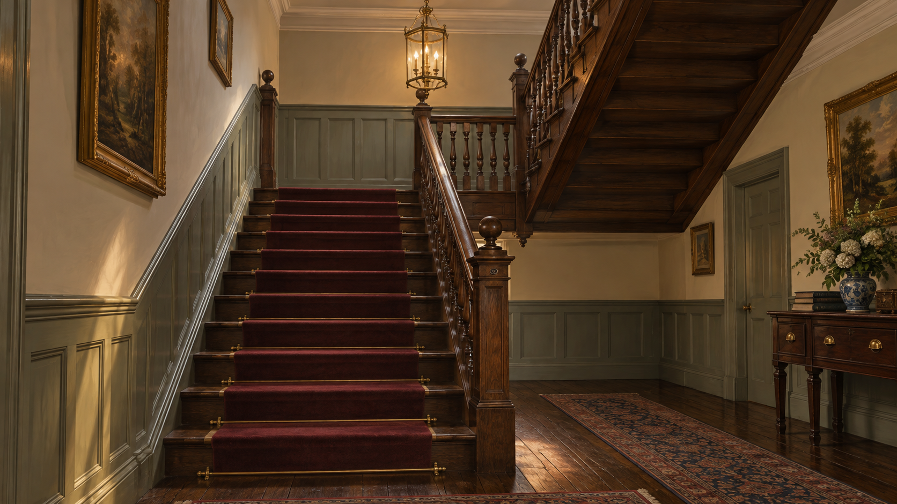hall_stair-v3T-034-门厅 · 1672 × 941 · PNG修订后为左侧上行、右侧返回的平行折返楼梯，背墙无窗。图中踏步数不等于规定的两跑各 10 级，建模以 v1 为准。打开原图
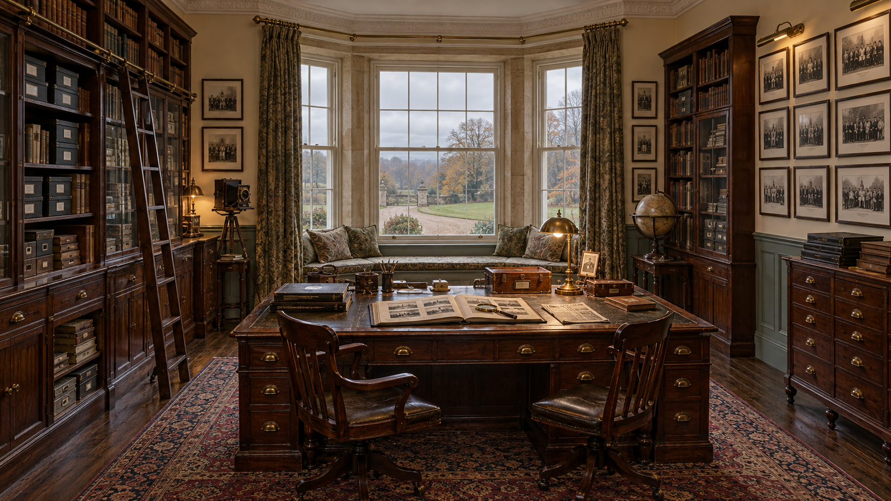archive_archive_mid-v3bT-028-照片档案室 · 1672 × 941 · PNG凸窗、窗座、大书桌、东西柜架与西侧合影墙可见。凸窗各扇的窗格细分仍需按六上六下规范校正；纸面细纹不可作为可读文字使用。打开原图
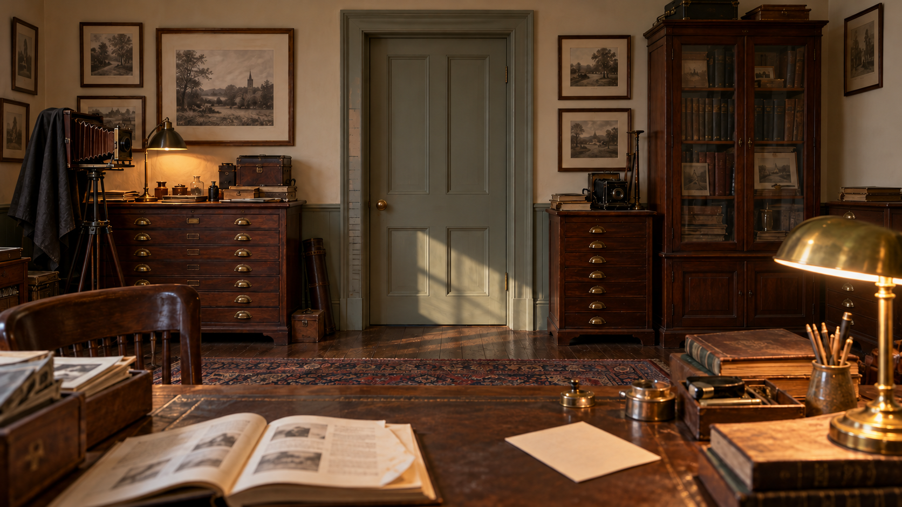archive_doorframe-v3T-028-照片档案室 · 1672 × 941 · PNG修订去掉多余壁炉与钟；四面板北门、左框刻痕、底片柜、手册和朝下照片可见。旧刻痕的剧情辨识仍需在游戏近景中验证。打开原图
dining_table_close-v3T-029-餐厅 · 1672 × 941 · PNG末端空椅子前有完整餐具；两侧餐具衬托。该图表达状态，不能替代房间反向空间参考；额外一副的叙事识别仍需结合章节验证。打开原图
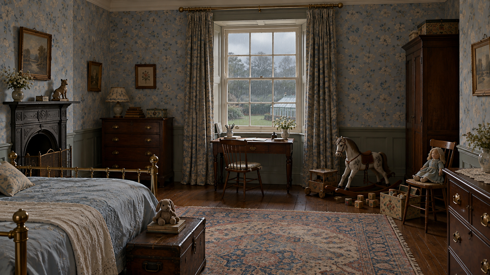child_room_child_mid-v3T-031-艾瑞斯的房间 · 1672 × 941 · PNG北侧唯一推拉窗、窗下书桌、左侧西墙壁炉、铜床、窗外温室屋顶可见。打开原图
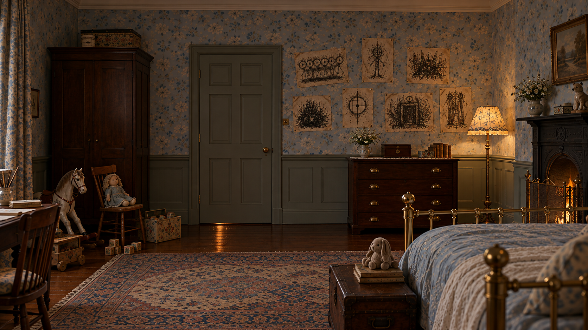child_room_child_wall-v3T-031-艾瑞斯的房间 · 1672 × 941 · PNG南门偏左、门右七张乱线画、柜上音乐盒。门扇生成成六面板，应按共同规范改为四面板；个别家具位置不能视为精确坐标。打开原图
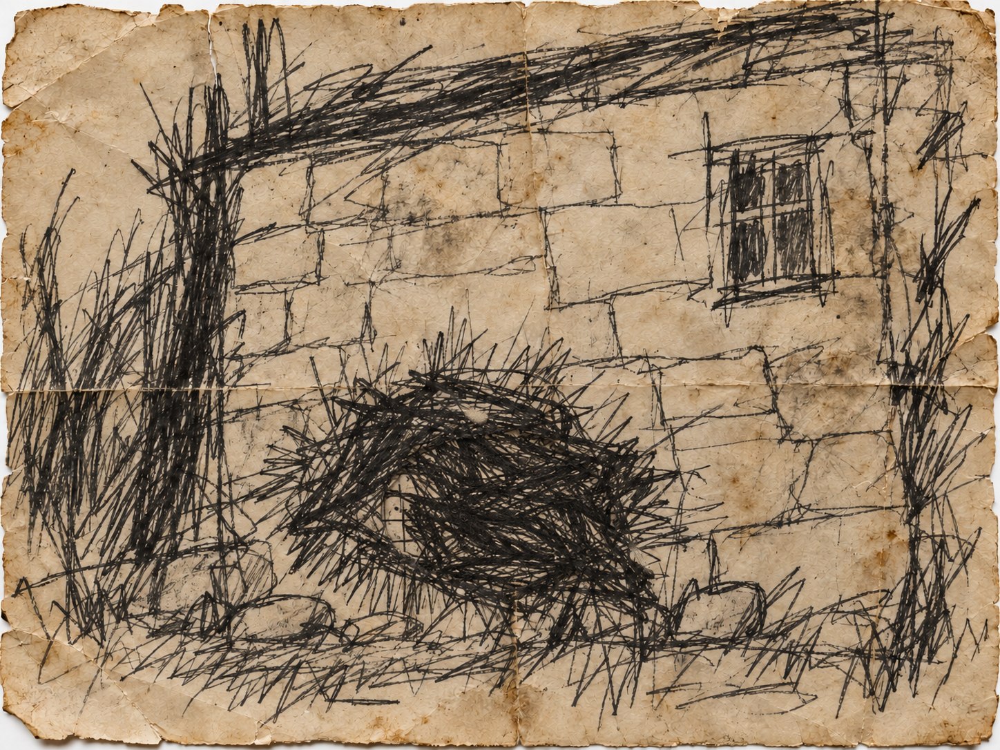iris_drawing_black_cloth-v3T-031-艾瑞斯的房间 · 1448 × 1086 · PNG修订加重遮堵线团，仅露出少量网格眼；旧纸、黑乱线与被堵开口均可见。打开原图
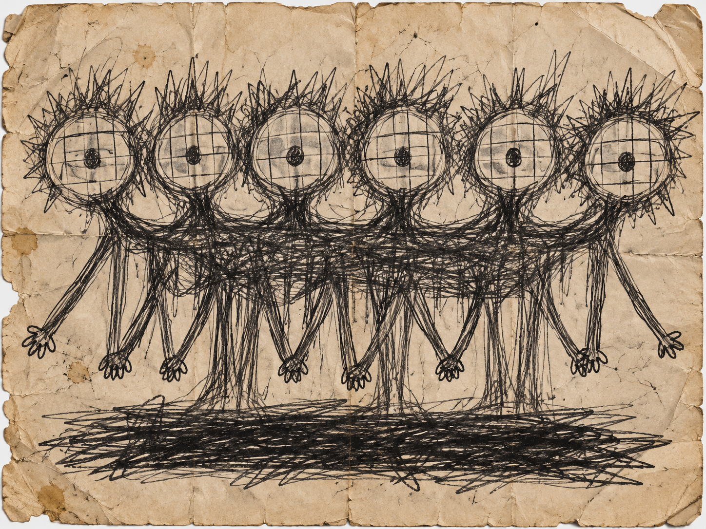iris_drawing_family_portrait-v3T-031-艾瑞斯的房间 · 1448 × 1086 · PNG六个重复网格脸、连成一体的身体、多手与名字处黑线条；黑白乱线。打开原图
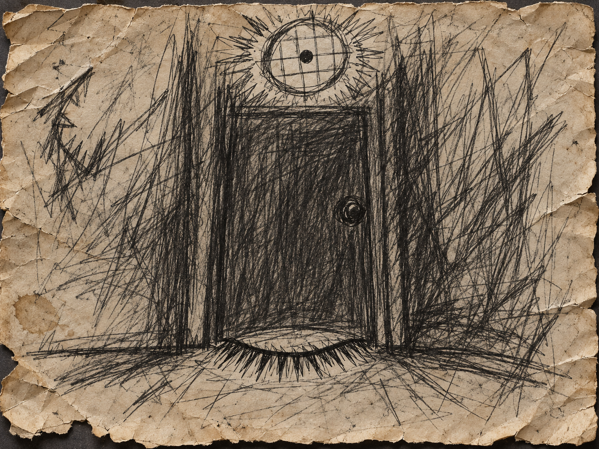iris_drawing_red_light_asleep-v3T-031-艾瑞斯的房间 · 1448 × 1086 · PNG门下闭眼与尖刺睫毛、上方网格圆灯；全图黑色线条，不使用红颜料。打开原图
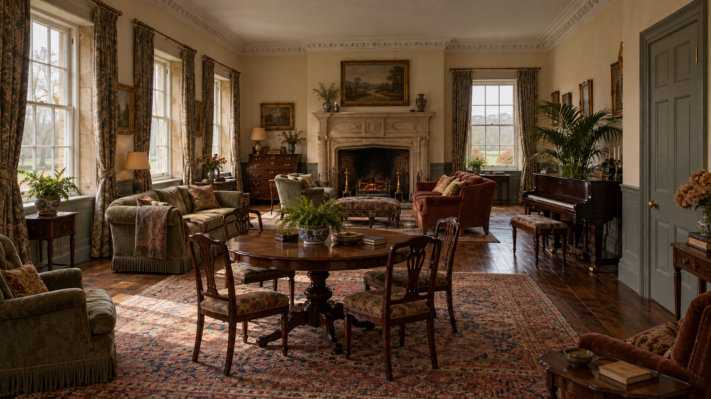seance_seance_mid-v3T-033-客厅·降灵会 · 1672 × 941 · PNG南墙三窗、西墙壁炉及北段一窗、北墙门可见；侧门生成分格需改为四面板。打开原图
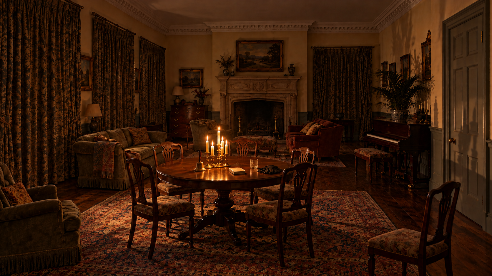seance_table_candle-v3T-033-客厅·降灵会 · 1672 × 941 · PNG修订为围桌五椅加一把远椅；全拉帘、壁炉熄灭、仅烛光，手铃与扣卡可见。与平日图共用空间；侧门分格需改为四面板。打开原图